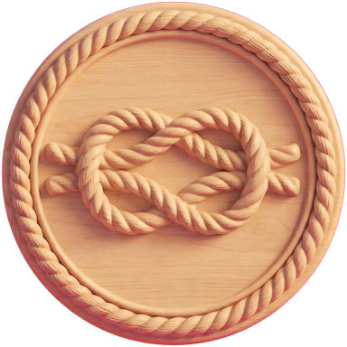
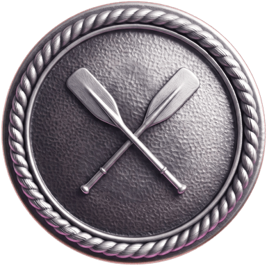
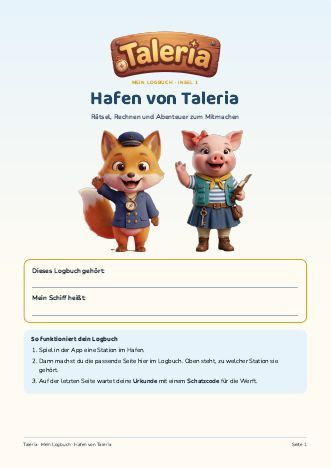
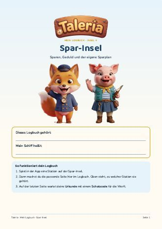
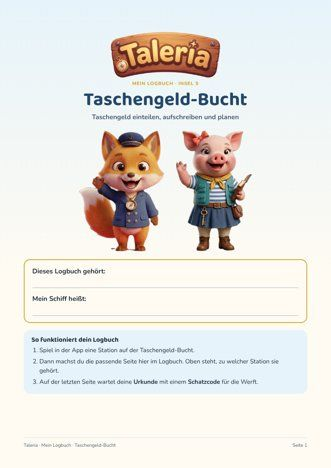

Ein Abenteuer in kleinen Etappen
Dein Kind wird Crewmitglied von Kapitän Talo und Zahlmeisterin Tala. Gemeinsam suchen sie die Teile einer zerrissenen Schatzkarte. Jede Insel ist ein Thema rund ums Geld.

5 bis 10 Minuten, eine klare Lernidee
Jede Station folgt demselben Ablauf. So weiß dein Kind immer, was kommt, und kann auch allein spielen. Alle Texte werden vorgelesen.
Weißt du noch?
Zwei kurze Fragen zur letzten Station, damit nichts verloren geht.
Schätz mal!
Erst raten, dann erfahren: Wie alt ist Geld? Die Auflösung kommt am Ende.
Bildergeschichte
Kurze Bilder mit Talo, Tala und den Inselbewohnern. Zwischendurch wird getippt, gewischt und gezogen.
Übung
Münzen legen, sortieren, entscheiden. Fehler werden erklärt, nicht bestraft.
Kurzer Check
Ein paar Fragen, jedes Mal neu gemischt. Dann gibt es Seemeilen und Sterne.
Wiederholen, ohne dass es sich so anfühlt
Nach jeder zweiten Station wirft das Schiff Anker. Beim Tauchgang kommen die Themen noch einmal dran, und im Wrack wartet ein Fundstück für die Sammlung. Zwischen den Inseln halten Händlerschiffe und Fischerboote an und stellen Fragen zur letzten Insel.
- Fragen kommen nach einem Tag, einer Woche und einem Monat wieder.
- Was falsch war, kommt früher wieder, was sitzt, seltener.
- Meister Taleron, ein freundliches Seeungeheuer, stellt ab und zu Rätselfragen.

16 Spiele: zum Nachdenken und mit Geschick
Neben den Stationen gibt es Spiele, die man immer wieder spielen kann. Die Denk-Spiele üben ein Thema, die Geschick-Spiele haben drei Leben, werden immer schneller und haben einen Rekord. Gelernt wird nebenbei.


Dazu Denk-Spiele wie die Fischbrötchen-Kasse (Wechselgeld), der Markt-Einkauf, der Eisstand, die Tauschkette, Elsas Glitzerladen (Werbetricks) und Mias Kiosk-Woche (Taschengeld einteilen).
Vom Schiffsjungen zur Kapitänin
Mit jeder Station sammelt dein Kind Seemeilen und steigt im Rang auf. Ob die Ränge Schiffsjunge oder Schiffsmädchen heißen, wählt das Kind selbst. Für jede Insel gibt es einen Orden, beim Tauchen Fundstücke, in der Werft Flaggen und Segel fürs eigene Schiff.
Alles wird verdient, nichts gekauft. Am Ende der Reise wartet die Goldene Schatzkarte, der „Finanzführerschein Stufe 1“.


Lernen auch ohne Bildschirm
Zu jeder Insel gibt es ein Logbuch als PDF: Rätsel, Rechenaufgaben, Malseiten, ein Auftrag fürs echte Leben und eine Urkunde. Auf der Urkunde steht ein Schatzcode, der in der App ein besonderes Teil für das Schiff freischaltet.



Ein Abenteuer, keine Daueraufgabe
Standard sind zwei neue Stationen pro Woche. Das Schiff braucht Wind, und der kommt zum Beispiel montags und donnerstags. Dazwischen kann dein Kind wiederholen, tauchen und spielen. In den Ferien stellst du im Leuchtturm einfach mehr ein. Es gibt keinen Countdown und keine täglichen Erinnerungen.
Selbst ausprobieren
Als Testfamilie spielt ihr alle fertigen Inseln kostenlos im Browser auf Handy oder Tablet.